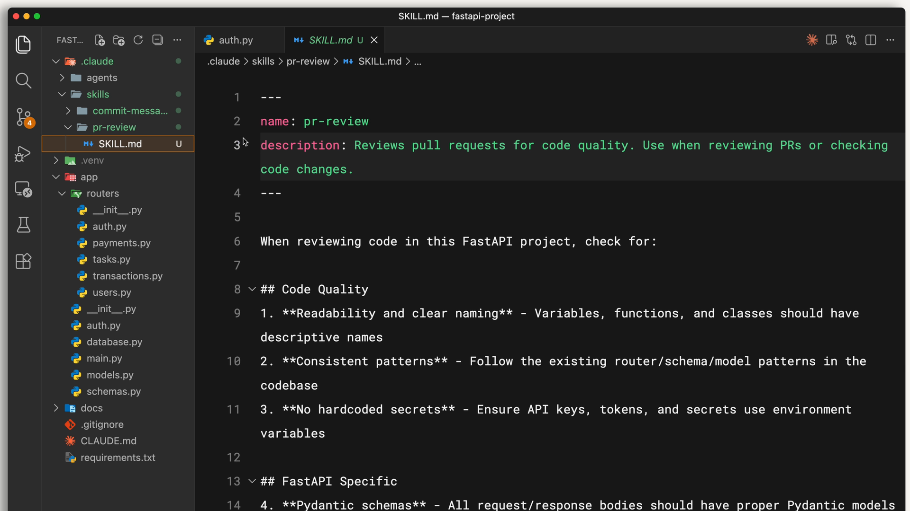

Introduction to Agent Skills
Skill คือ โฟลเดอร์ + ไฟล์ SKILL.md ที่สอนวิธีทำงานเฉพาะให้ Claude แล้วมันจะ หยิบมาใช้เองเมื่อจำเป็น ผ่าน semantic matching
เรียบเรียงตามลำดับบทเรียนจริง: Skill คืออะไร → สร้างอันแรก → ตั้งค่า/หลายไฟล์ → ต่างจากฟีเจอร์อื่นยังไง → แชร์ → แก้ปัญหา
📦 Skill คืออะไร
Skill คือโฟลเดอร์ที่มีไฟล์ SKILL.md ซึ่งมี frontmatter อย่างน้อยคือ name + description ตอนเริ่มต้น Claude จะโหลดเฉพาะ ชื่อและคำอธิบาย ของทุก skill เข้ามาก่อน แล้วเมื่อ task ตรงกับ skill ไหน ก็ match ด้วย semantic matching แล้วค่อยโหลดเนื้อหาเต็ม (โหลดแบบ on demand) เก็บได้ทั้งแบบ personal (~/.claude/skills) และ project (.claude/skills)


🛠️ สร้าง ตั้งค่า และจัดโครงสร้าง
- สร้างอันแรก: เริ่มจากศูนย์ได้ (เช่น skill เขียน PR description) Claude จะ ขอ confirmation ก่อนโหลดเต็ม ลำดับความสำคัญเมื่อชื่อซ้ำ: Enterprise → Personal → Project → Plugins; แก้ก็แก้
SKILL.mdลบก็ลบโฟลเดอร์แล้ว restart - Configuration:
name/descriptionจำเป็น ส่วนallowed-tools/modelเป็นออปชัน - Progressive disclosure: เก็บ
SKILL.mdให้ < 500 บรรทัด แล้ว link ไปไฟล์อื่น; scripts รันได้โดยไม่กิน context
🧭 Skills ต่างจากฟีเจอร์อื่นอย่างไร
| ฟีเจอร์ | ลักษณะเด่น |
|---|---|
CLAUDE.md | โหลดทุกครั้ง (persistent) |
| Skills | โหลด on demand เมื่อ task ตรง |
| Subagents | ทำงานใน context แยก |
| Hooks | event-driven รันแน่นอน |
| MCP | เชื่อม external tools (คนละหมวด) |
🤝 แชร์และแก้ปัญหา
แชร์: project skills แชร์ผ่าน Git ได้, ทำเป็น plugins/marketplaces, หรือใช้ enterprise managed settings (priority สูงสุด); ถ้าจะให้ subagent ใช้ skill ต้อง list skills ไว้ใน frontmatter ของ subagent
Troubleshooting: ใช้ skills validator ช่วยตรวจ — ถ้า skill ไม่ trigger ให้แก้ description, ถ้า ไม่โหลด มักเพราะ SKILL.md ผิดโครงสร้าง, ถ้า ใช้ผิดตัว มักเพราะ description คล้ายกันเกินไป
🎯 สรุปใจความสำคัญ
- Skill = โฟลเดอร์ + SKILL.md (name/description จำเป็น) โหลด on demand ผ่าน semantic matching
- Progressive disclosure: SKILL.md สั้น (<500 บรรทัด) + link ไฟล์; scripts รันโดยไม่กิน context
- priority เมื่อชื่อซ้ำ: Enterprise → Personal → Project → Plugins
- ต่างจาก CLAUDE.md (โหลดทุกครั้ง), Subagents (context แยก), Hooks (event), MCP (external)
- แชร์ผ่าน Git/plugins/managed settings; แก้ปัญหา trigger ที่ description เป็นหลัก